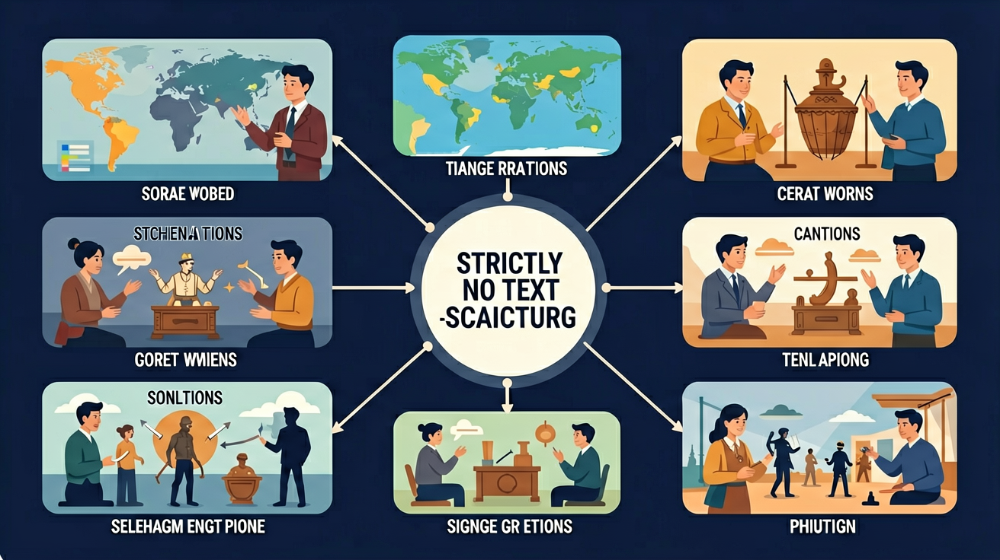

本课程以通史的叙事框架，展示中国历史和世界历史发展的基本过程。

🎯 能说出西欧封建制度的三要素
🎯 能分析伊斯兰教对阿拉伯帝国扩张的作用
🎯 能比较玛雅与阿兹特克文明的异同
❓ 为什么欧洲中世纪被称为‘黑暗时代’却诞生了大学？
❓ 郑和下西洋为啥比哥伦布早还带那么多宝贝？
❓ 非洲大津巴布韦遗址是外星人建的吗？
学完这一课，这些问题你都能自信地回答。
西欧封建制度的基础是？
郑和下西洋主要目的是？
选择或输入后，这节课会围绕你的问题展开。
学习「中古时期（欧洲/亚洲/非洲美洲）」时，第一步最应该做什么？
先选一个，错了正好暴露你的前概念，我们一起纠正。
中古时期（欧洲/亚洲/非洲美洲）是高中历史的重要内容。本课程以通史的叙事框架，展示中国历史和世界历史发展的基本过程。
马克思主义根据人类社会生产力与生产关系基本矛盾的不同性质，把人类历史发展分为原始社会、奴隶社会、封建社会、资本主义社会和共产主义社会几种社会形态。
学习路径：明确概念→掌握方法→情境练习→反思纠错。
展现人类发展进程中丰富的历史文化遗产，以及人类社会从古至今、从分散到整体、社会形态从低级到高级的发展历程。
点击时代按钮切换世界格局；结合本课主题观察空间分布。
欧洲中世纪封君封臣、庄园与基督教会势力强大；亚洲有阿拉伯帝国、印度与东亚王朝等；美洲非洲亦有独特文明。中古不是“黑暗”一词可概括，既有束缚也有大学、城市与跨区域贸易的发展。
欧洲抓封建与教会；伊斯兰世界抓扩张与文化保存传播；东亚抓科举官僚制。指出后来西欧转型的内部因素。
常见误区：常见误区是把中世纪等同于全面停滞，忽视城市与文化成就。
西欧封建社会等级关系的重要纽带是？
复制提示词到 AI 学伴，生成「中古时期（欧洲/亚洲/非洲美洲）」的时间轴或事件提纲；也可以上传你手绘的示意图，请 AI 学伴点评。
复制后可粘贴到 AI 学伴继续对话。
下列关于中世纪欧洲城市的描述，正确的是？
请比较中世纪欧洲城市与古代罗马城市在布局、社会结构和经济特征方面的异同。
关于中古时期（欧洲/亚洲/非洲美洲）的学习，哪种做法最科学？
选一个并查看反馈。
先独立作答，再点选项查看对错与错因。
中世纪欧洲城市复兴的主要原因是什么？
中世纪欧洲城市最显著的特征是什么？
下列哪项不属于中世纪城市的社会阶层？
中世纪欧洲城市复兴的标志之一是____的兴起。
答案：手工业行会
手工业行会是中世纪城市的重要经济组织，标志着城市经济的繁荣。
中世纪欧洲城市居民通过____获得自治权。
答案：特许状
特许状是封建领主授予城市的自治证书，标志着城市获得独立地位。
✅ 12世纪文艺复兴、大学兴起、哥特式建筑发展
💡 受‘黑暗时代’刻板印象影响
✅ 阿拉伯帝国8世纪鼎盛，奥斯曼15世纪灭拜占庭
💡 两者都信仰伊斯兰教且地跨亚非欧
口诀：封臣效忠得土地，庄园自给农奴苦，教会掌权大学兴
类比：封建金字塔像加盟店：国王是总部，领主是区域代理，骑士是店长
【真题】日本大化改新模仿的是中国哪个朝代制度？
【迁移】如果某地出土了带阿拉伯文的瓷器，最能说明？
【概念】玛雅文明衰落的主要假说包括？
点击节点跳转到对应章节；可切换布局。